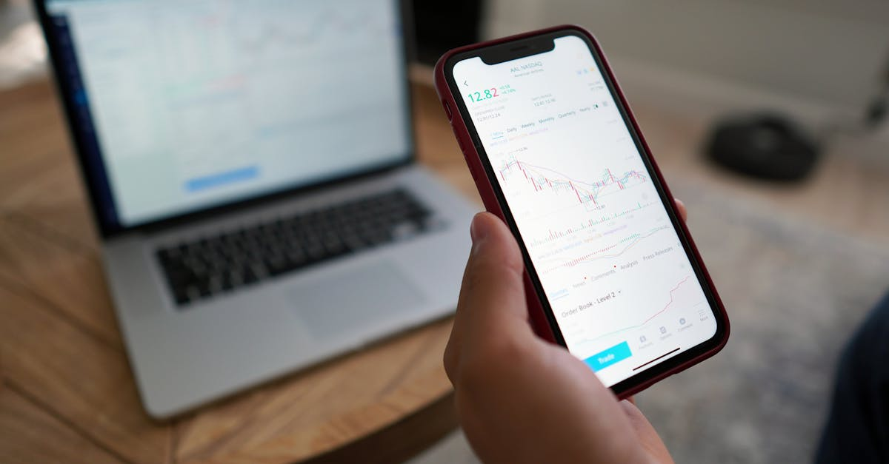

Le Spectre Nucléaire Iranien : Une Menace Géopolitique Persistante
La question du programme nucléaire iranien demeure une source majeure d'instabilité géopolitique sur la scène internationale. Récemment, des déclarations, notamment celles du Représentant Kevin Kiley, ont rappelé l'urgence et la gravité de la situation, soulignant que l'Iran ne doit en aucun cas être autorisé à acquérir l'arme nucléaire. Cette préoccupation n'est pas nouvelle ; elle traverse les administrations successives et les relations diplomatiques tendues depuis des décennies. La perspective d'un Iran doté de l'arme nucléaire soulève des inquiétudes légitimes quant à la prolifération, à l'équilibre des pouvoirs au Moyen-Orient et à la sécurité mondiale. Les inspections de l'Agence Internationale de l'Énergie Atomique (AIEA) se heurtent souvent à des obstacles, alimentant les soupçons sur la nature réelle des activités nucléaires du pays. La communauté internationale, divisée sur la meilleure approche à adopter – sanctions, diplomatie, voire action militaire –, se trouve dans une position délicate. Chaque nouvelle avancée dans le programme iranien, qu'elle soit avérée ou suspectée, résonne sur les marchés financiers mondiaux, créant une volatilité accrue et des incertitudes qui peuvent affecter tous les actifs, des devises aux matières premières. Comprendre ces dynamiques est essentiel pour tout investisseur cherchant à naviguer dans cet environnement complexe. L'histoire nous enseigne que les tensions géopolitiques, lorsqu'elles atteignent un certain seuil, peuvent déclencher des mouvements de marché imprévisibles, nécessitant une vigilance constante et des stratégies d'adaptation rapides.
👉 À lire : Bourse : L'incertitude au détroit d'Ormuz relance les marchés

L'Impact des Tensions Iraniennes sur les Marchés Financiers Mondiaux
Les répercussions des dynamiques géopolitiques impliquant l'Iran s'étendent bien au-delà des frontières du Moyen-Orient, touchant directement les marchés financiers internationaux. L'une des conséquences les plus immédiates concerne le marché pétrolier. L'Iran étant un producteur significatif de brut, toute escalade des tensions, perturbation de ses exportations ou menace sur ses installations, peut entraîner une flambée des prix du pétrole. Cette hausse se répercute ensuite sur l'ensemble de l'économie mondiale, augmentant les coûts de production et de transport, et potentiellement alimentant l'inflation. Les devises sont également fortement impactées. Les monnaies des pays voisins, ou celles dont les économies sont fortement dépendantes du pétrole, peuvent connaître une dépréciation notable en période d'incertitude. Inversement, certaines devises refuges, comme le dollar américain ou le franc suisse, peuvent s'apprécier temporairement. Le marché des changes (Forex), en particulier, est un baromètre sensible de ces fluctuations. Les paires de devises impliquant des économies émergentes proches de la zone de tension ou des pays fortement liés aux flux pétroliers peuvent devenir extrêmement volatiles. Les investisseurs doivent donc surveiller attentivement les annonces politiques, les rapports de renseignement et les réactions diplomatiques pour anticiper les mouvements du marché. L'incertitude générée par la situation iranienne peut également freiner les investissements dans les marchés émergents, les investisseurs préférant se tourner vers des actifs jugés plus sûrs. Cette aversion au risque globale peut se traduire par une fuite des capitaux hors des marchés considérés comme plus risqués, accentuant la volatilité sur les places boursières et les marchés de devises.
👉 À lire : Marchés : Analyse Post-Crise, Opportunités IA
Spirit Airlines et la Fragilité des Modèles Économiques Face aux Chocs
L'actualité financière récente a également mis en lumière la fragilité de certains modèles économiques face aux chocs externes, comme l'illustre la situation de Spirit Airlines. Bien que distincte de la crise iranienne, cette affaire souligne une tendance plus large : la sensibilité accrue des entreprises, particulièrement celles opérant dans des secteurs à faible marge ou fortement concurrentiels, aux imprévus économiques et opérationnels. La faillite potentielle ou les difficultés rencontrées par une compagnie aérienne comme Spirit Airlines peuvent avoir des répercussions systémiques, affectant les fournisseurs, les employés, et même l'industrie du tourisme dans son ensemble. Les raisons derrière ces difficultés sont multiples : coûts du carburant fluctuants, endettement, concurrence acharnée, mais aussi des facteurs macroéconomiques comme l'inflation ou les changements dans les habitudes de consommation. Pour les investisseurs, cela rappelle l'importance cruciale de la diversification et de l'analyse fondamentale approfondie. Il ne suffit pas d'identifier une entreprise prometteuse ; il faut évaluer sa résilience face aux risques potentiels, qu'ils soient sectoriels, financiers ou géopolitiques. Dans un monde où les événements se succèdent à un rythme effréné, des perturbations comme celles liées à la situation iranienne peuvent rapidement exacerber les faiblesses d'une entreprise déjà sous pression. L'analyse des bilans, des flux de trésorerie et de la stratégie de gestion des risques devient donc primordiale. Les exemples comme Spirit Airlines nous enseignent que même les acteurs établis peuvent être surpris par la rapidité et l'ampleur des changements, rendant la prévision et la gestion des risques plus complexes que jamais.
La Décision de la Cour Suprême : Un Regard sur l'Équilibre Juridique et Économique
L'intervention du Représentant Kiley sur Bloomberg aborde également l'impact de la décision de la Cour Suprême dans l'affaire Louisiana v. Callais. Bien que le résumé ne détaille pas la nature exacte de cette décision, on peut supposer qu'elle touche à des aspects juridiques fondamentaux susceptibles d'avoir des implications économiques. Les décisions judiciaires de haut niveau, particulièrement celles émanant de la Cour Suprême, ont souvent le pouvoir de redéfinir des cadres réglementaires, d'influencer des secteurs industriels entiers, ou de modifier l'interprétation de lois qui régissent les marchés. Par exemple, une décision concernant la réglementation environnementale, les droits de propriété, ou même la responsabilité des entreprises peut avoir des conséquences financières directes et indirectes. Pour les investisseurs, comprendre ces décisions et leurs portées potentielles est essentiel. Elles peuvent créer de nouvelles opportunités d'investissement, mais aussi introduire de nouveaux risques ou rendre certains modèles économiques obsolètes. L'affaire Louisiana v. Callais, quelle qu'en soit la substance, s'inscrit dans ce contexte où le droit et l'économie sont intimement liés. Les marchés financiers réagissent souvent rapidement à ces annonces, car elles introduisent un nouveau niveau de certitude ou d'incertitude quant à l'environnement réglementaire futur. Les analystes financiers scrutent ces jugements pour évaluer leur impact sur les bénéfices des entreprises, la valorisation des actifs et la trajectoire globale de l'économie. Il est donc crucial de ne pas négliger la dimension juridique dans l'analyse des marchés, car elle façonne le terrain de jeu dans lequel opèrent les entreprises et les investisseurs.
L'Intelligence Artificielle au Service de la Navigation sur les Marchés Volatils
Dans un contexte de tensions géopolitiques accrues, comme celles entourant l'Iran, et de fluctuations économiques imprévisibles, soulignées par des cas comme Spirit Airlines ou des décisions judiciaires marquantes, les marchés financiers deviennent intrinsèquement plus volatils. Les investisseurs traditionnels se retrouvent souvent démunis face à la rapidité et à l'ampleur des mouvements de prix. C'est dans ce paysage complexe que l'intelligence artificielle (IA) offre des solutions innovantes. Les algorithmes d'IA, capables de traiter d'énormes volumes de données en temps réel – des indicateurs économiques aux nouvelles géopolitiques, en passant par les sentiments sur les réseaux sociaux –, peuvent identifier des tendances et des corrélations invisibles à l'œil humain. Le trading de devises, le Forex, est un marché particulièrement propice à l'application de ces technologies. Sa liquidité, son fonctionnement 24h/24 et 5j/7, et la multitude de facteurs qui l'influencent en font un terrain de jeu idéal pour des systèmes automatisés. Un agent IA peut analyser simultanément les annonces de la Maison Blanche concernant l'Iran, les fluctuations du prix du baril de Brent, les indicateurs de l'inflation américaine, et les résultats d'une décision de la Cour Suprême, pour ajuster sa stratégie de trading en quelques millisecondes. L'avantage majeur réside dans la capacité de l'IA à opérer sans émotion, un biais humain majeur dans la prise de décision financière. La peur, l'avidité, ou l'attachement à une position perdante sont éliminés. L'IA exécute des stratégies basées sur des règles prédéfinies et des analyses de données objectives, permettant une réaction plus rapide et plus rationnelle face aux événements imprévus. Cette approche peut s'avérer particulièrement précieuse pour les traders particuliers qui cherchent à protéger leur capital et à saisir des opportunités dans des environnements de marché difficiles.

Comment l'IA Analyse la Géopolitique pour le Trading Forex
L'intégration de l'analyse géopolitique dans les stratégies de trading automatisé par IA représente une avancée significative. Loin de se limiter aux simples indicateurs techniques, les systèmes d'IA modernes peuvent désormais ingérer et interpréter une vaste gamme de données non structurées. Imaginez un agent IA analysant les discours des dirigeants mondiaux, les rapports de think tanks spécialisés en géopolitique, et même les flux d'actualités en temps réel. Grâce au traitement du langage naturel (NLP), l'IA peut évaluer le ton, le sentiment et les intentions derrière ces communications. Par exemple, une escalade rhétorique entre l'Iran et une puissance occidentale sera détectée, analysée pour sa gravité potentielle, et traduite en probabilités d'impact sur le prix du pétrole ou sur certaines paires de devises majeures comme EUR/USD ou USD/JPY. Les algorithmes peuvent ensuite corréler ces événements géopolitiques avec des données macroéconomiques et des mouvements de marché historiques pour affiner leurs prédictions. Si une crise diplomatique majeure est détectée, l'IA pourrait anticiper une fuite vers les valeurs refuges, renforçant par exemple le dollar américain, et ajuster ses positions en conséquence. De même, une perturbation attendue des approvisionnements en énergie due à des tensions au Moyen-Orient pourrait amener l'IA à privilégier des positions sur des devises de pays producteurs d'énergie ou à anticiper une hausse de l'inflation dans les économies consommatrices. L'objectif n'est pas de prédire l'avenir avec certitude, mais de construire des modèles probabilistes robustes qui tiennent compte de la complexité des interactions mondiales. Cette capacité d'analyse multidimensionnelle permet aux systèmes de trading IA de réagir de manière proactive plutôt que réactive, en anticipant les répercussions potentielles des événements géopolitiques sur le marché des changes, et ce, 24 heures sur 24.
Le Trading Forex 24h/24 : Un Avantage Stratégique Indéniable
Le marché du Forex, par sa nature globale et sa continuité, offre une opportunité unique pour les stratégies de trading automatisé. Fonctionnant sans interruption du lundi matin au vendredi soir (heure locale de Sydney à Auckland), il permet une exécution des ordres à tout moment. Pour un trader humain, cela signifie devoir surveiller les marchés pendant des heures, souvent au détriment du sommeil et de la vie personnelle, ou risquer de manquer des opportunités cruciales ou d'être exposé à des risques imprévus pendant les heures de fermeture. C'est là que l'avantage d'un agent IA devient évident. Capable de fonctionner 24h/24, il peut surveiller les marchés, analyser les données et exécuter des transactions sans relâche, indépendamment des fuseaux horaires ou des conditions de marché. Que ce soit pendant la session asiatique, européenne ou américaine, l'IA est toujours active. Cela est particulièrement pertinent dans le contexte actuel : les tensions géopolitiques, comme celles liées à l'Iran, ne connaissent pas de pause. Une annonce majeure peut survenir à 3 heures du matin, heure de Paris. Un trader humain pourrait être lent à réagir, tandis qu'un agent IA, programmé pour identifier ce type d'événement et ses conséquences potentielles, pourrait exécuter une stratégie de couverture ou de prise de position presque instantanément. De plus, cette disponibilité constante permet de tirer parti des opportunités qui émergent lors des chevauchements de sessions, souvent synonymes de volatilité accrue. L'IA peut ainsi exploiter les fluctuations de prix qui se produisent lorsque les marchés européens et américains sont ouverts simultanément, ou lors de la transition entre la session asiatique et européenne. Cette capacité à opérer en continu, combinée à une analyse rapide et objective, offre un avantage stratégique considérable pour optimiser les performances de trading et gérer les risques de manière plus efficace, même dans les environnements les plus imprévisibles.
Pourquoi Choisir un Agent IA pour le Forex Aujourd'hui ?
Face à un environnement économique et géopolitique de plus en plus complexe et volatil, la question n'est plus de savoir si l'intelligence artificielle a sa place dans le trading, mais plutôt comment en tirer le meilleur parti. Les événements récents, qu'il s'agisse des tensions persistantes autour du programme nucléaire iranien, de la fragilité de certains secteurs illustrée par les difficultés de compagnies comme Spirit Airlines, ou de l'influence des décisions judiciaires sur l'économie, créent un paysage d'investissement semé d'embûches. Les stratégies de trading traditionnelles, souvent basées sur l'intuition humaine et une analyse manuelle, peuvent montrer leurs limites. L'agent IA, lui, apporte une combinaison unique d'avantages :
- Vitesse d'exécution inégalée : L'IA peut analyser des milliers de points de données et exécuter des transactions en une fraction de seconde, bien plus rapidement qu'un humain.
- Analyse objective : Libéré des émotions humaines comme la peur ou l'avidité, l'IA prend des décisions basées uniquement sur les données et les algorithmes.
- Opération continue : Le trading Forex 24h/24 est une réalité avec l'IA, permettant de ne manquer aucune opportunité, quel que soit le fuseau horaire.
- Gestion des risques sophistiquée : Les algorithmes peuvent être programmés pour intégrer des règles de gestion des risques complexes, limitant les pertes potentielles.
- Adaptabilité : Les systèmes d'IA avancés peuvent apprendre et s'adapter aux nouvelles conditions de marché, ajustant leurs stratégies en temps réel.
Pour les investisseurs particuliers, s'équiper d'un agent IA pour le trading Forex, c'est choisir un partenaire technologique capable de naviguer dans la complexité des marchés modernes. C'est s'assurer une présence constante sur le marché, une prise de décision basée sur la logique plutôt que sur l'émotion, et une capacité à exploiter les opportunités générées par la volatilité, y compris celle induite par des événements géopolitiques majeurs. Dans un monde où l'information circule à la vitesse de la lumière et où les marchés réagissent instantanément, déléguer une partie de sa stratégie de trading à une IA performante devient non seulement un avantage, mais une nécessité pour rester compétitif et protéger son capital.
Conclusion : Anticiper l'Avenir avec Confiance grâce à l'IA
L'analyse des événements récents, des tensions géopolitiques autour de l'Iran aux défis économiques rencontrés par des entreprises comme Spirit Airlines, en passant par l'influence des décisions judiciaires, confirme une tendance de fond : les marchés financiers sont de plus en plus soumis à des forces complexes et imprévisibles. Naviguer dans cet environnement requiert des outils et des stratégies à la hauteur des enjeux. L'intelligence artificielle, et plus particulièrement les agents IA dédiés au trading Forex, se présentent comme une solution d'avenir. En offrant une capacité d'analyse de données sans précédent, une exécution ultra-rapide, une absence d'émotion dans la prise de décision, et une disponibilité 24h/24, ces systèmes permettent aux investisseurs de mieux appréhender la volatilité et de transformer les risques en opportunités. L'agent IA n'est pas une baguette magique, mais un outil puissant qui, lorsqu'il est bien utilisé et intégré dans une stratégie globale, peut considérablement améliorer les performances de trading et la gestion du risque. Alors que le monde continue d'évoluer à un rythme accéléré, s'équiper d'une technologie de pointe comme l'IA pour le trading Forex n'est plus un luxe, mais une démarche stratégique essentielle pour quiconque souhaite prospérer sur les marchés financiers. C'est choisir d'anticiper l'avenir avec une confiance renouvelée, en s'appuyant sur la puissance de l'automatisation et de l'intelligence artificielle.